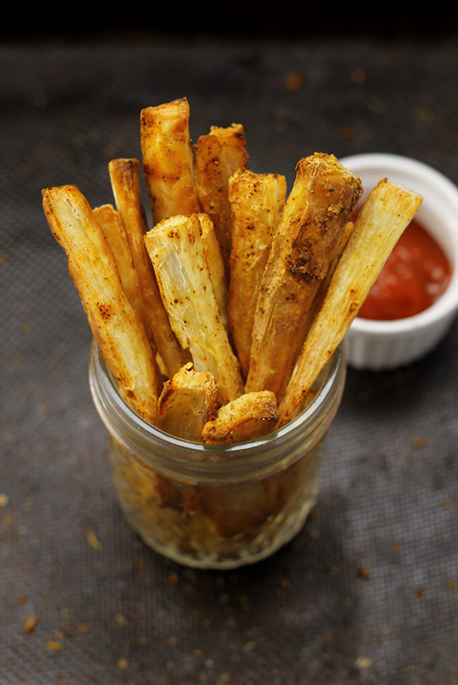

Back
Yucca (Cassava) Fries
Ingredients
- 2 pounds fresh or frozen yucca root
- salt
- Oil for frying (canola is good, don't use olive oil for frying ever, it will burn and release carcinogens!)

Instructions
- If using fresh yuca, peel the yuca, cut
into large pieces, and remove the fibrous
inner core of the root.
- Bring a large pot of salted water to a boil
and cook yuca until it starts to turn
translucent and can be pierced easily
with a fork, about 20 to 30 minutes.
Drain thoroughly.
- Check yuca for any remaining fibrous
pieces and remove them. Cut the yuca
root into thick rectangular wedges.
- Heat 2 inches of oil in a heavy
frying pan over medium-high heat. Once
the oil is hot (ideally 350 F), fry the yuca
in batches, turning occasionally, until
golden brown.
- Carefully remove yuca from pan with a
slotted spoon or wire skimmer and place
onto a plate lined with paper towels.
Source